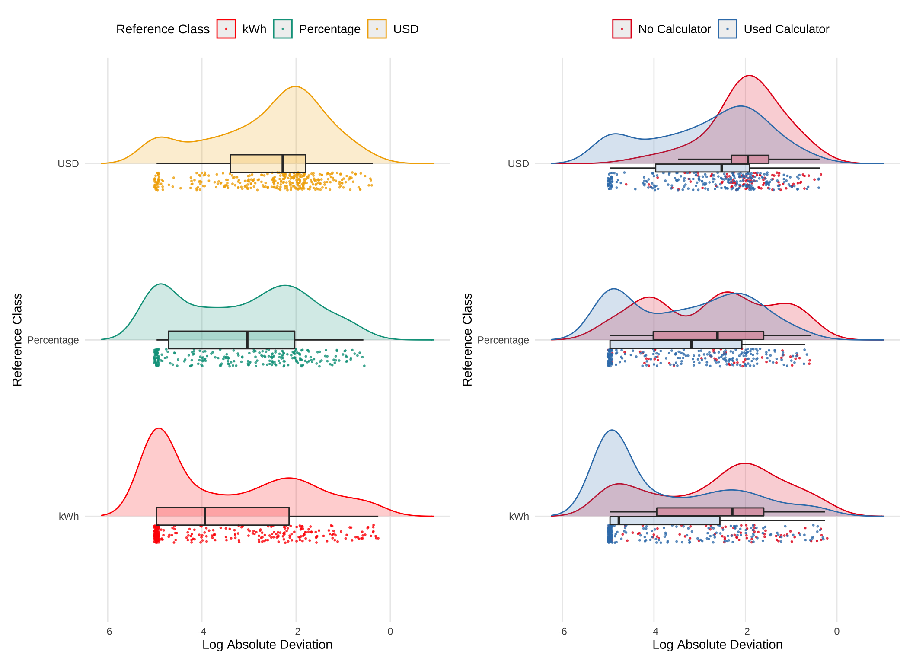
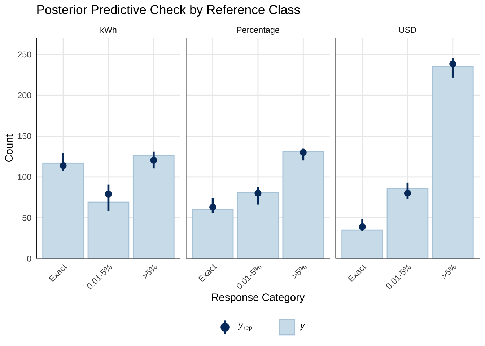
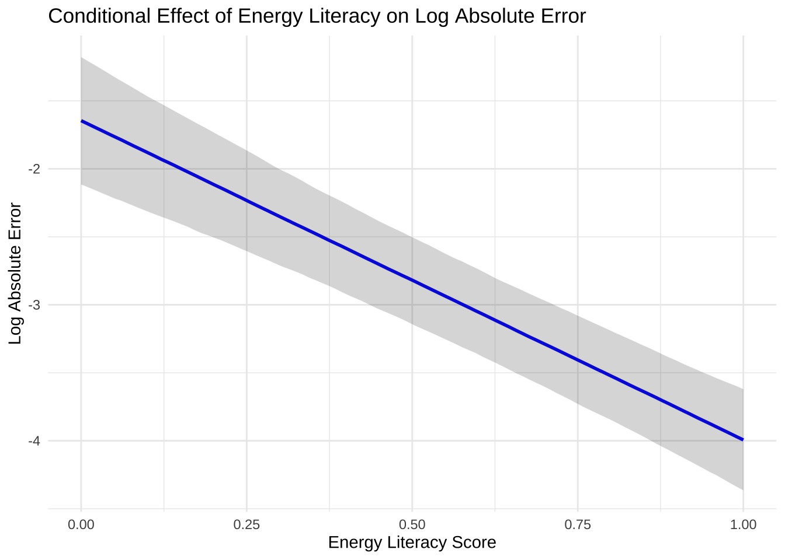
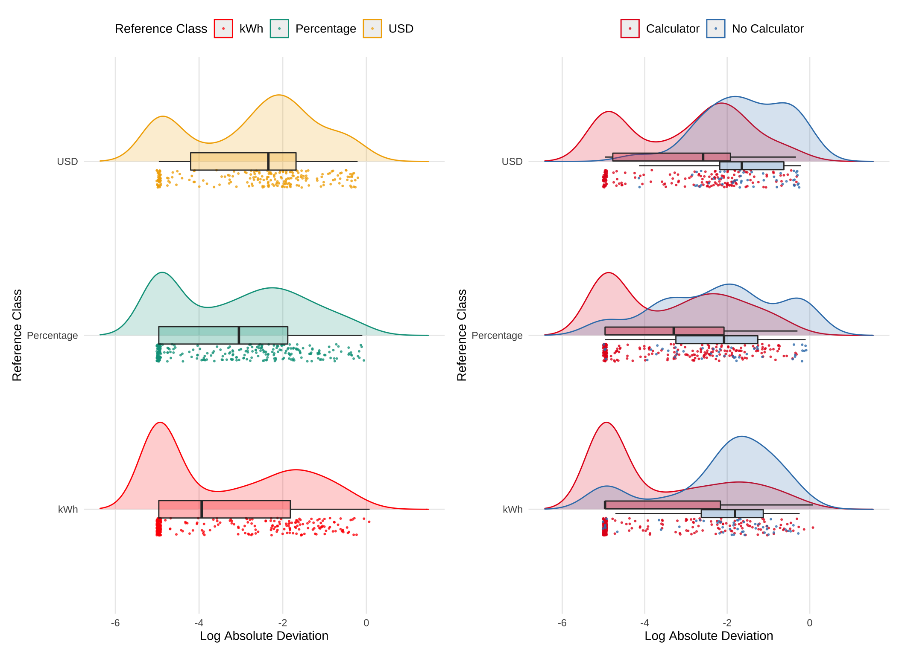
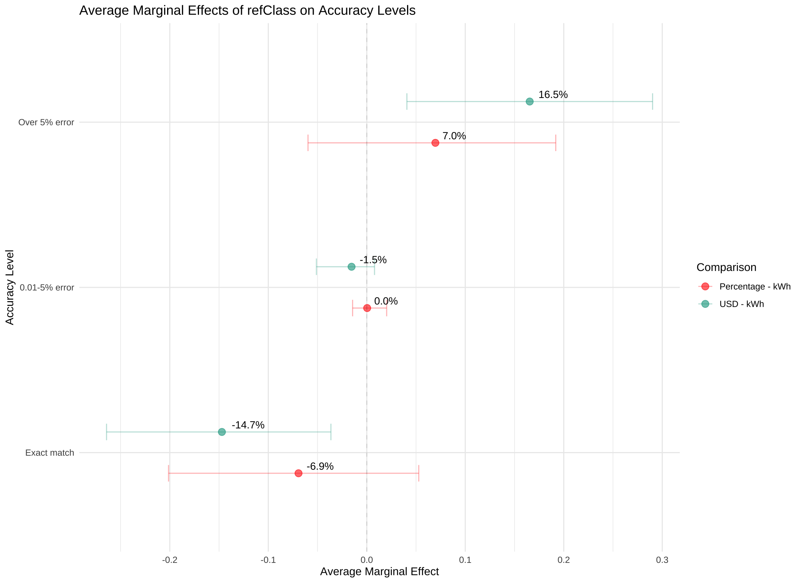
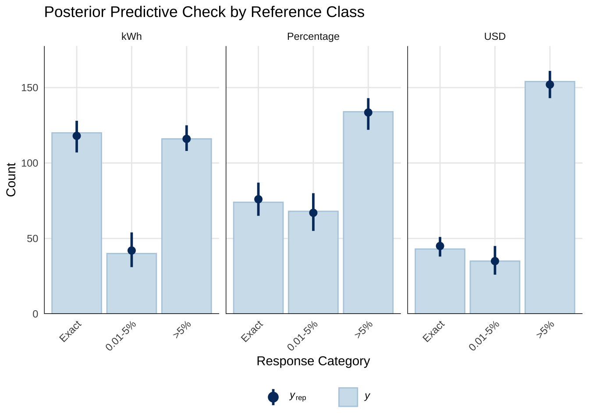
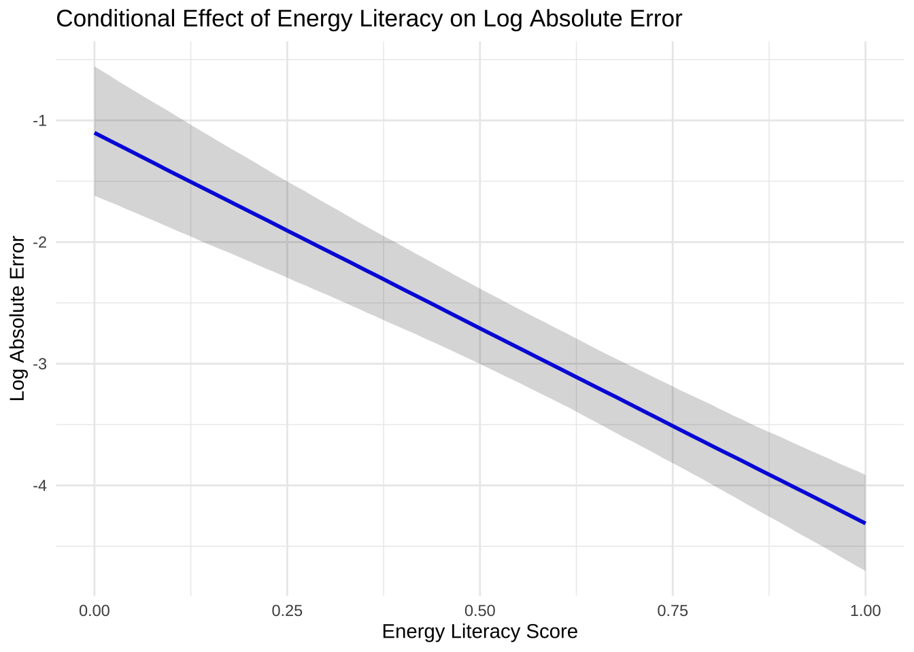

![]()

Introduction
Literature Review
Electricity bills are a frequent touchpoint for consumers seeking to understand their energy usage, yet effectively turning that billing data into practical steps can be demanding. Among low-income households, these challenges contribute to disproportionate rates of energy insecurity (Memmott et al., 2021). At the same time, previous research shows that the clarity and format of energy-use information play a pivotal role in whether individuals adopt meaningful conservation behaviors (Attari et al., 2010; Canfield et al., 2017; Fischer, 2008). The interplay of these factors indicates that how energy data is presented can substantially shape not only how people interpret their consumption but also the degree to which they modify their habits to save energy.
The way numerical information is presented can significantly affect how individuals process and use that information (Reimer et al., 2015). The reference class problem highlights that numbers without clear reference points can lead to misinterpretation, as the meaning of a statistic depends on the category or class it refers to (Gigerenzer & Edwards, 2003; Reimer et al., 2015). Presenting energy information in absolute units (e.g., kWh) provides a clear reference class, potentially enhancing comprehension. Indeed, the manner in which energy information is presented has been shown to significantly influence both comprehension and subsequent behavior (Canfield et al., 2017). For example, the use of tables has been found to facilitate point-reading, essential for understanding specific energy values, while graphs may be more useful in tasks requiring more complex information interpretation (Canfield et al., 2017).
The concept of cognitive fit posits that performance improves when the information presentation format aligns with the task requirements (Vessey, 1991), and that such an alignment can reduce cognitive load and enhance accuracy in planning (Shah & Freedman, 2011). For instance, tables are generally more effective than graphs for conveying specific electricity usage data because they facilitate straightforward point reading (Canfield et al., 2017). However, the effectiveness of the format varies with the type of information and individual differences, such as energy literacy, which significantly impacts comprehension and conservation intent. Moreover, the unit in which numerical information is presented influences how decision-makers evaluate and choose between options, with default units increasing value sensitivity (Herberz et al., 2020). In the context of energy, presenting information in terms of multiple translations can increase preference for options aligned with activated objectives, such as pro-environmental values (Ungemach et al., 2018). Furthermore, mental accounting mechanisms, where individuals create mental budgets linking specific consumption acts to specific payments, significantly impact energy decisions and behaviors (Hahnel et al., 2020).
Evidence from research on energy consumption feedback, normative comparisons, and eco-feedback platforms suggests that comprehensible and contextually meaningful data presentations can improve users’ ability to plan reductions, especially when these formats are integrated into daily routines (Canfield et al., 2017; Fischer, 2008; Kim et al., 2022; Schwartz et al., 2015). Furthermore, temporal and monetary frames have been shown to alter decision quality, with monthly costs or absolute consumption levels often encouraging more energy-efficient intentions than abstract annual or percentage-based metrics (Gill et al., 2022; Larrick & Soll, 2008). In this context, tailoring reference classes to align with intuitive cognitive processes can help bridge the gap between aggregate reduction goals and targeted, appliance-specific conservation strategies.
Furthermore, research suggests that natural frequencies and absolute numbers are generally easier for individuals to understand compared to percentages or probabilities Hoffrage et al. (2000). In the context of energy conservation, using absolute units may facilitate more accurate planning and decision-making by aligning with intuitive cognitive processing. However, it’s important to note that even intuitive formats can pose challenges. Weber et al. (2018) found that individuals often struggle with reasoning tasks presented in natural frequencies because they inadvertently revert to more complex probabilistic thinking. This suggests that merely changing the information format may not be sufficient; understanding how consumers process and utilize this information is crucial.
Although prior research shows that energy-use information must be intelligible and action-oriented (Attari et al., 2010; Canfield et al., 2017), many consumers still have difficulty converting broad guidance (“use less energy”) into targeted appliance-level plans. As highlighted by Abrahamse et al. (2005), information alone, without concrete guidance on how to distribute reductions across appliances or times of use, may fail to encourage meaningful change. Moreover, a meta-analysis by Nemati & Penn (2020) revealed that interventions featuring frequent, household-level feedback, particularly when combined with social norm information and monetary incentives, are significantly more effective in driving conservation. Similar findings emerge in contexts beyond electricity. For instance, Tonke (2024) reports that offering residents a short but actionable list of water-saving strategies—rather than a generic call to conserve—led to a measurable decrease in residential water consumption. These results suggest that equipping consumers with procedure-focused instructions can complement abstract energy-saving goals.
Despite existing studies on energy-use communication and format effects, limited research has explored how different numerical representations influence consumers’ ability to create accurate energy conservation plans. Specifically, there is a gap in understanding how presenting energy information in absolute units versus percentages or monetary terms affects the precision of planning appliance-specific reductions. The current study addresses these critical issues by systematically investigating the impact of varying information formats (kWh, percentage, and USD) on the accuracy of energy-planning decisions. By manipulating the presentation format of energy information, this research aims to elucidate how different representational formats influence planning accuracy.
Hypotheses
Building on these findings and informed by prior work showing that frequencies (like absolute units in kWh) are easier to comprehend and facilitate more precise decision-making compared to percentages, our study also utilizes a tabular format, but manipulates whether participants must consider energy information presented as absolute units (kWh), percentages (%), or monetary costs (USD). We hypothesize that presenting information in absolute units (kWh) will lead to more accurate household energy conservation planning.
Experiment 1
See Figure 1 for an example of a planning trial as it was seen by participants.
Methods
Participants
We implemented our task and surveys on Qualtrics, and recruited participants through Amazon Mechanical Turk. In Experiment 1, 252 participants were initially recruited, but data from 17 participants were corrupted due to experimenter error, leaving a final sample of 235 participants. Most participants (76%) reported using a calculator to complete the task.
Materials and Design
The study employed a mixed design with reference class (kWh, percentage, USD) as a between-subjects factor and state/family scenario as a within-subjects factor. Each participant completed energy reduction planning tasks for two different states, with state order counterbalanced across participants. The family scenarios featured four households in different climate regions: Texas (Smith family) and California (Adams family) representing warm climates, and Colorado (Wells family) and Massachusetts (Davis family) representing cold climates. We obtain average utility use from each state by CITE SOURCE FOR STATE AVGS?
Procedure
Participants received energy usage data for two hypothetical families and were tasked with creating action plans to meet specified reduction goals by allocating usage across five appliance categories: heating, cooling, water heating, refrigerator, and and other appliances (e.g., TV, lighting).
For each family scenario, the participants were shown a table containing the families utility usage from the prior year, alongside the state averages for each appliance category (both prior year usage and stage averages are always shown in kWh). For each scenario, participants were asked to create two possible action plans to achieve the target reduction in total household energy usage (see Figure 1). Depending on their reference class condition, the target reduction amount presented either in kilowatt-hours (kWh), as percentages of total household usage, or in U.S. dollars. In all conditions, the target reduction was equivalent to a 15% reduction in total household kWh.

Additional data collected included:
- Energy Literacy Quiz: An 8-item questionnaire assessing participants’ knowledge of energy consumption and conversion (DeWaters & Powers, 2011).
- Calculator Usage Tracking: Questions determined whether participants used a calculator, paper/pen, or other methods to complete the tasks.
Results
Data Analysis
All preprocessing and analyses were carried out in R (Team, 2020) and the tidyverse package (Wickham et al., 2019). Mixed Bayesian regressions were fit using the brms package (Bürkner, 2017), with participants and family scenario (states) set as random effects.
| Reference Class | Avg. % Change | % meeting goal (exact) | % meeting goal (close match) | Abs. Deviation | Log Abs. Deviation |
|---|---|---|---|---|---|
| kWh | 0.22 | 0.38 | 0.54 | 0.03 | -3.7 |
| Percentage | 0.21 | 0.22 | 0.40 | 0.06 | -3.1 |
| USD | 0.23 | 0.10 | 0.22 | 0.10 | -2.4 |
Table 1 that participants in the kWh condition met the target goal 38% of the time, compared to 22% for the Percentage condition and 10% for the USD condition. Moreover, the kWh reference class exhibited smaller deviations from the target reduction, suggesting that participants performed more accurately when the goal was framed in kWh rather than when percentages or USD.
As shown in Table 1, participants in the kWh condition exactly met the target reduction goal 38% of the time, significantly outperforming those in the Percentage (22%) and USD (10%) conditions. Furthermore, the kWh reference class exhibited notably smaller mean absolute deviations (0.03) compared to Percentage (0.06) and USD (0.10), suggesting that presenting the reduction goal in absolute units facilitated more precise allocations.
| Accuracy Level | kWh | Percentage | USD | Combined Groups % |
|---|---|---|---|---|
| Exact match | 38.5% | 22.4% | 10.2% | 23.1% |
| 0.01-5% error | 22.7% | 29.5% | 25% | 25.5% |
| Over 5% error | 38.8% | 48.1% | 64.8% | 51.3% |
We next categorized responses into three accuracy levels (exact match [0% error], minor deviations [0.01–5%], and large deviations [>5%]) for our primary statistical modeling. Using Bayesian ordinal regression, we modeled the ordered accuracy outcome as a function of the reference class condition, while controlling for random variation across participants and family scenarios:
\[ \text{Accuracy Level} \sim \text{Reference Class} + \text{Calculator} + (1|\text{id}) + (1|\text{Family Scenario}) \]
This approach allowed us to estimate thresholds (intercepts) and regression coefficients that capture how different reference classes affect the likelihood of achieving higher accuracy categories. For each comparison, we provide posterior odds ratios (OR) and their 95% CIs. This approach allows the estimation of threshold parameters and regression coefficients that characterize how changes in predictor variables (such as the reference class: kWh, percentage, or USD) relate to probabilities of being in each accuracy category. Specifically, we used a cumulative logit link function to model the ordered accuracy outcome, and we specified weakly informative priors for the regression coefficients (normal distributions with mean 0 and standard deviation of 1) and for the cutpoints (normal distributions with a mean of zero and a standard deviation of 4.0). The approach allows us to estimate threshold parameters and regression coefficients that characterize how changes in predictor variables (such as the reference class: kWh, percentage, or USD) relate to probabilities of being in each accuracy category.
| Parameter | Estimate | CI_Lower | CI_Upper | pd |
|---|---|---|---|---|
| Intercept[1] | -4.21 | -5.90 | -2.58 | 1.00 |
| Intercept[2] | -0.89 | -2.49 | 0.71 | 0.87 |
| refClassPercentage | 1.44 | 0.07 | 2.88 | 0.98 |
| refClassUSD | 3.13 | 1.81 | 4.50 | 1.00 |
| calcUsedCalculator | -3.30 | -4.80 | -1.92 | 1.00 |
| Comparison | odds_ratio | ci_lower | ci_upper |
|---|---|---|---|
| Percentage vs kWh | 4.2 | 1.1 | 18 |
| USD vs kWh | 22.9 | 6.1 | 90 |
As shown in Table 3, the reference class coefficients are positive for both the Percentage (Estimate = 1.3, 95% CI: 0.01 to 2.66, pd = 0.98) and USD (Estimate = 2.8, 95% CI: 1.52 to 4.04, pd = 1.00) conditions, relative to the kWh baseline. This indicates that, compared to the kWh condition, participants in both the Percentage and USD conditions were more likely to produce plans that fell into higher error categories. Moreover, the odds ratios (see Table 3) suggest that the USD condition led to a notably higher likelihood of large errors compared to the kWh baseline (OR = 15.7), while the Percentage condition also demonstrated increased odds (OR = 3.7) but was somewhat less detrimental to accuracy than USD. These results align with our descriptive findings and further clarify that framing the target reductions in absolute kWh units may facilitate significantly more accurate planning. Posterior predictive checks showed that the ordinal model provided a reasonable fit to the observed data (see Figure 3).


To further investigate individual factors that may influence planning accuracy, we examined the relationship between participants’ energy literacy scores and their performance on the task. Energy literacy was assessed using an 8-item questionnaire adapted from (DeWaters & Powers, 2011), which covers topics such as energy units, appliance energy consumption, and sources of electricity. A Bayesian linear regression model was fit with log-transformed absolute error as the outcome variable and energy literacy score as the predictor, controlling for random effects of participant and state: log_abs_error ~ els + (1|id) + (1|state). Results indicated a significant negative relationship between energy literacy and log absolute error (Estimate = -2.35, 95% CI: -2.88 to -1.81), suggesting that participants with higher energy literacy scores tended to have smaller deviations from the target reduction goal, and thus more accurate plans overall (Figure 4).
Experiment 1: Discussion
Experiment 1 examined how different numerical representations of energy reduction goals affected participants’ planning accuracy. In line with our hypothesis that absolute units would yield better accuracy, the kWh condition supported significantly more precise energy reduction plans than did either the Percentage or USD conditions. Although the Percentage format was detrimental to accuracy relative to kWh, it was the USD condition that consistently produced the poorest outcomes, suggesting that monetary terms, while intuitive in everyday contexts, may not serve as effective reference classes for planning appliance-specific reductions in energy use.
Experiment 2 will extend these findings by examining whether additional variables, such as the difficulty of the reduction goal or the rounding of numerical values, further interact with reference class conditions, thereby providing a more comprehensive understanding of how to optimize energy information presentation for improved planning accuracy.
Experiment 2
Methods
The experimental procedures in Experiment 2 are quite similar to those in Experiment 1. Experiment 2 employed a 2 (task goal: 10% vs. 15% reduction) x 2 (last year’s usage: exact vs. rounded) within-subjects design, with a between-subjects manipulation of the reference class (USD vs. Percentage vs. kWh).. We recruited 206 participants from Amazon Mechanical Turk, but data from from 10 participants were corrupted due to experimenter error, leaving a final sample of 196 participants.
Results
| Reference Class | % meeting goal (exact) | % meeting goal (close match) | Abs. Deviation | Log Abs. Deviation |
|---|---|---|---|---|
| kWh | 0.44 | 0.52 | 0.02 | -3.9 |
| Percentage | 0.28 | 0.42 | 0.06 | -3.2 |
| USD | 0.20 | 0.29 | 0.10 | -2.4 |

| Parameter | Estimate | CI_Lower | CI_Upper | pd |
|---|---|---|---|---|
| Intercept[1] | -1.45 | -2.85 | -0.07 | 0.98 |
| Intercept[2] | 1.26 | -0.09 | 2.65 | 0.97 |
| refClassPercentage | 1.02 | -0.63 | 2.71 | 0.89 |
| refClassUSD | 2.27 | 0.53 | 3.98 | 0.99 |
| calcNoCalculator | 4.10 | 2.20 | 6.06 | 1.00 |
| pct_goal15% | -0.39 | -0.81 | 0.04 | 0.96 |
| roundedRounded | -0.53 | -0.96 | -0.11 | 0.99 |
| comparison | odds_ratio | ci_lower | ci_upper |
|---|---|---|---|
| Percentage vs kWh | 2.78 | 0.53 | 15.0 |
| USD vs kWh | 9.68 | 1.69 | 53.4 |
| calcNoCalculator | 60.37 | 9.02 | 426.4 |
| 15% Goal vs 10% Goal | 0.68 | 0.44 | 1.0 |
| Rounded vs Not | 0.59 | 0.38 | 0.9 |
As in Experiment 1, accuracy was categorized into three ordinal levels: “Exact match” (0% error), “0.01-5% error,” and “Over 5% error”. The analyses for Experiment 2 employed a Bayesian ordinal regression model to examine the probability of falling into one of three accuracy categories (exact match, minor deviations, or substantial deviations) as a function of the reference class condition (kWh, Percentage, USD), while including pct_goal (10% vs. 15%), rounded (exact vs. rounded usage data), and calculator usage as additional predictors. Random intercepts were specified for both participant and state,
The ordinal regression analysis revealed that the USD reference class significantly increased the odds of higher error categories compared to the kWh reference class (OR = 9.68, 95% CI: [1.69, 53.4]). Participants in the USD condition were therefore substantially more likely to deviate from the target energy reduction goal compared to those in the kWh condition. In contrast, the Percentage condition’s odds ratio relative to kWh was more uncertain (OR = 2.78, 95% CI: 0.53, 15.0), indicating that although there may be a trend toward reduced accuracy in the Percentage condition, the evidence was not definitive.
We also found that using rounded numbers modestly improved accuracy (b = -0.53, 95% CI: [-0.96, -0.11]), with participants having 0.59 times the odds of falling into a worse accuracy category when working with rounded values. The more challenging 15% reduction goal was associated with slightly better performance compared to the 10% goal (b = -0.39, 95% CI: [-0.81, 0.04]), though this effect was relatively small. Consistent with Experiment 1, the use of a calculator had a large and significant effect on accuracy. The coefficient for calcNoCalculator was 4.10 (95% CI: 2.20, 6.06), and the corresponding odds ratio was 60.37 (95% CI: 9.02, 426.4), indicating that participants who did not use a calculator were substantially more likely to fall into higher error categories.
Figure 6 shows the marginal effects of refClass on each level of accuracy_level. These results reveal that switching from kWh to Percentage decreased the probability of an “Exact match” by an average of 7.0 percentage points (95% CI: -19.2, 4.2) and increased the probability of “Over 5% error” by 6.9 percentage points (95% CI: -4.5, 18.6). Similarly, switching from kWh to USD decreased the probability of an “Exact match” by 15 percentage points (95% CI: -26.7, -3.3) and increased the probability of “Over 5% error” by 16.5 percentage points (95% CI: 3.7, 29.3).



We once again examained the effect of energy literacy on planning accuracy. A Bayesian linear regression model was fit with log-transformed absolute error as the outcome variable and energy literacy score as the predictor, controlling for random effects of participant and state: log_abs_error ~ els + (1|id) + (1|state). This revealed a significant negative relationship between energy literacy and log absolute error (Estimate = -3.21, 95% CI: -3.89 to -2.52), indicating that participants with higher energy literacy scores tended to have smaller deviations from the target reduction goal, and thus more accurate plans overall (Figure 8).
Experiment 2: Discussion
Experiment 2 aimed to build upon the findings of Experiment 1, not only by replicating the core manipulation of reference class, but also by incorporating additional variables that might influence planning accuracy. These included goal difficulty and the way that the prior year’s usage was presented (rounded or exact). The results largely converged with those of Experiment 1, providing further converging evidence that presenting energy reduction goals in absolute units (kWh) facilitates more accurate planning compared to percentage-based or monetary formats.
Taken together, the results of Experiment 2 provide further support for the hypothesis that presenting energy reduction goals in absolute units (kWh) leads to more accurate planning compared to percentage-based or monetary formats.
The finding that the more challenging 15% reduction goal was associated with a slight improvement in accuracy is counterintuitive. It may be that participants put more effort into the task under this condition, or perhaps this is an artifact of the way that the task was presented. However, this effect was relatively small and thus should be explored in future research to better understand its underlying mechanisms. Furthermore, the magnitude of the effect size of this manipulation should be examined to better understand the practical implications of goal difficulty for energy conservation.
The large and significant effect of calculator use, consistent across both experiments, underscores the crucial role of tools that individuals are likely to employ in real-world settings. Finally, the consistent relationship between energy literacy and accuracy, observed across both experiments, highlights the potential value of educational interventions aimed at improving consumers’ understanding of energy concepts.
General Discusion
Across two experiments, we consistently found that presenting energy reduction goals in absolute units (kWh) led to more accurate planning compared to percentage-based or monetary representations. This advantage persisted across variations in goal difficulty and numerical presentation, suggesting a robust effect of reference class on planning accuracy.
It is, however, important to note that while we find a significant benefit of presenting energy information in absolute units, some prior work suggests that consumers may prefer to receive information about costs, rather than absolute units (Karjalainen, 2011), or in some cases, that monetary information may lead to better decision-making (Blasch et al., 2019).
Karjalainen 2011 - people prefer information about price (Karjalainen, 2011)
Mention Blasch et al. (2019) - better long-term appliance selection with information presented in monetary terms.
References
Abrahamse, W., Steg, L., Vlek, C., & Rothengatter, T. (2005). A review of intervention studies aimed at household energy conservation. Journal of Environmental Psychology, 25(3), 273–291. https://doi.org/10.1016/j.jenvp.2005.08.002
Attari, S. Z., DeKay, M. L., Davidson, C. I., & Bruine De Bruin, W. (2010). Public perceptions of energy consumption and savings. Proceedings of the National Academy of Sciences, 107(37), 16054–16059. https://doi.org/10.1073/pnas.1001509107
Blasch, J., Filippini, M., & Kumar, N. (2019). Boundedly rational consumers, energy and investment literacy, and the display of information on household appliances. Resource and Energy Economics, 56, 39–58. https://doi.org/10.1016/j.reseneeco.2017.06.001
Bürkner, P.-C. (2017). Brms: An R Package for Bayesian Multilevel Models Using Stan. Journal of Statistical Software, 80, 1–28. https://doi.org/10.18637/jss.v080.i01
Canfield, C., Bruine De Bruin, W., & Wong-Parodi, G. (2017). Perceptions of electricity-use communications: Effects of information, format, and individual differences. Journal of Risk Research, 20(9), 1132–1153. https://doi.org/10.1080/13669877.2015.1121909
DeWaters, J. E., & Powers, S. E. (2011). Energy literacy of secondary students in New York State (USA): A measure of knowledge, affect, and behavior. Energy Policy, 39(3), 1699–1710. https://doi.org/10.1016/j.enpol.2010.12.049
Fischer, C. (2008). Feedback on household electricity consumption: A tool for saving energy? Energy Efficiency, 1(1), 79–104. https://doi.org/10.1007/s12053-008-9009-7
Gigerenzer, G., & Edwards, A. (2003). Simple tools for understanding risks: From innumeracy to insight. BMJ, 327(7417), 741–744. https://doi.org/10.1136/bmj.327.7417.741
Gigerenzer, G., & Hoffrage, U. (1995). How to improve Bayesian reasoning without instruction: Frequency formats. Psychological Review, 102(4), 684–704. https://doi.org/10.1037/0033-295X.102.4.684
Gill, C. A., Atlas, S. A., Hardisty, D. J., & Scott, S. P. (2022). Consumer matching costs to context: Status quo bias, temporal framing, and household energy decisions. Journal of Consumer Behaviour, 21(5), 1018–1027. https://doi.org/10.1002/cb.2051
Hahnel, U. J. J., Chatelain, G., Conte, B., Piana, V., & Brosch, T. (2020). Mental accounting mechanisms in energy decision-making and behaviour. Nature Energy, 5(12), 952–958. https://doi.org/10.1038/s41560-020-00704-6
Herberz, M., Brosch, T., & Hahnel, U. J. J. (2020). Kilo what? Default units increase value sensitivity in joint evaluations of energy efficiency. Judgment and Decision Making, 15(6), 972–988. https://doi.org/10.1017/S1930297500008172
Hoffrage, U., Lindsey, S., Hertwig, R., & Gigerenzer, G. (2000). Communicating Statistical Information. Science, 290(5500), 2261–2262. https://doi.org/10.1126/science.290.5500.2261
Karjalainen, S. (2011). Consumer preferences for feedback on household electricity consumption. Energy and Buildings, 43(2-3), 458–467. https://doi.org/10.1016/j.enbuild.2010.10.010
Kim, H., Ham, S., Promann, M., Devarapalli, H., Bihani, G., Ringenberg, T., Kwarteng, V., Bilionis, I., Braun, J. E., Rayz, J. T., Raymond, L., Reimer, T., & Karava, P. (2022). MySmartE – An eco-feedback and gaming platform to promote energy conserving thermostat-adjustment behaviors in multi-unit residential buildings. Building and Environment, 221, 109252. https://doi.org/10.1016/j.buildenv.2022.109252
Larrick, R. P., & Soll, J. B. (2008). The MPG Illusion. Science, 320(5883), 1593–1594. https://doi.org/10.1126/science.1154983
Memmott, T., Carley, S., Graff, M., & Konisky, D. M. (2021). Sociodemographic disparities in energy insecurity among low-income households before and during the COVID-19 pandemic. Nature Energy, 6(2), 186–193. https://doi.org/10.1038/s41560-020-00763-9
Nemati, M., & Penn, J. (2020). The impact of information-based interventions on conservation behavior: A meta-analysis. Resource and Energy Economics, 62, 101201. https://doi.org/10.1016/j.reseneeco.2020.101201
Reimer, T., Jones, C., & Skubisz, C. (2015). Numeric Communication of Risk. In The SAGE handbook of risk communication (pp. 167–179).
Schwartz, T., Stevens, G., Jakobi, T., Denef, S., Ramirez, L., Wulf, V., & Randall, D. (2015). What People Do with Consumption Feedback: A Long-Term Living Lab Study of a Home Energy Management System. Interacting with Computers, 27(6), 551–576. https://doi.org/10.1093/iwc/iwu009
Shah, P., & Freedman, E. G. (2011). Bar and Line Graph Comprehension: An Interaction of Top-Down and Bottom-Up Processes. Topics in Cognitive Science, 3(3), 560–578. https://doi.org/10.1111/j.1756-8765.2009.01066.x
Team, R. C. (2020). R: A Language and Environment for Statistical Computing. R: A Language and Environment for Statistical Computing.
Tonke, S. (2024). Providing procedural knowledge: A field experiment to encourage resource conservation in Namibia. Journal of Development Economics, 166, 103202. https://doi.org/10.1016/j.jdeveco.2023.103202
Ungemach, C., Camilleri, A. R., Johnson, E. J., Larrick, R. P., & Weber, E. U. (2018). Translated Attributes as Choice Architecture: Aligning Objectives and Choices Through Decision Signposts. Management Science, 64(5), 2445–2459. https://doi.org/10.1287/mnsc.2016.2703
Vessey, I. (1991). Cognitive Fit: A Theory-Based Analysis of the Graphs Versus Tables Literature. Decision Sciences, 22(2), 219–240. https://doi.org/10.1111/j.1540-5915.1991.tb00344.x
Weber, P., Binder, K., & Krauss, S. (2018). Why Can Only 24% Solve Bayesian Reasoning Problems in Natural Frequencies: Frequency Phobia in Spite of Probability Blindness. Frontiers in Psychology, 9, 1833. https://doi.org/10.3389/fpsyg.2018.01833
Wickham, H., Averick, M., Bryan, J., Chang, W., McGowan, L. D., François, R., Grolemund, G., Hayes, A., Henry, L., Hester, J., Kuhn, M., Pedersen, T. L., Miller, E., Bache, S. M., Müller, K., Ooms, J., Robinson, D., Seidel, D. P., Spinu, V., … Yutani, H. (2019). Welcome to the Tidyverse. Journal of Open Source Software, 4(43), 1686. https://doi.org/10.21105/joss.01686